Build and manage your own Agent — character creation, the agent files you've submitted, and your cover ID.
-> Enter as Agent Clearance: A-Cell A-CELLHandler tools — every Agent on file, organized into Cells, plus a shared table soundtrack. Password required.
-> Enter as Handler